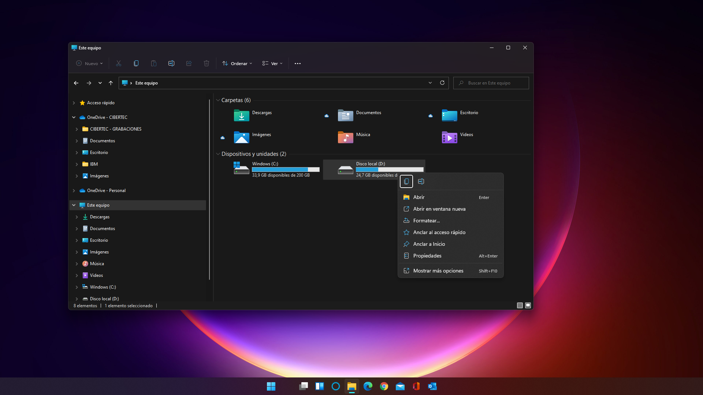
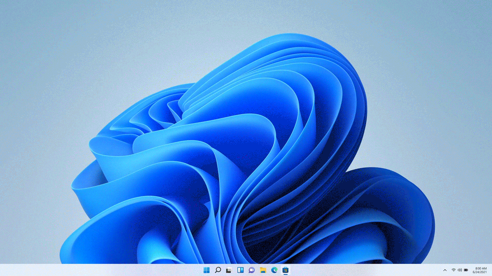
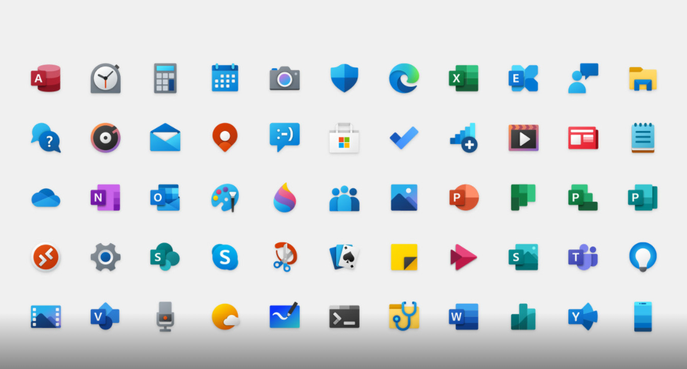

Windows 11: novedades, requisitos y cómo instalarlo
¿Qué es y por qué Windows 11?
Windows 11 es el primer paso (y no uno precisamente pequeño) de Microsoft para modernizar su sistema operativo. Windows lleva muchos años acumulando restos de actualizaciones pasadas y convirtiéndose poco a poco en una especie de «monstruo de Frankenstein». Tras tomar el mando de Windows, Panos Panay, ex-director de Surface, se ha puesto un objetivo entre ceja y ceja: devolver a Windows a la cima. Panay afirma que su deseo es que la gente utilice Windows porque lo aman y no solo porque lo necesitan. La autocrítica hacia el estado del sistema operativo es evidente. Windows 11 trae de la mano un gran rejuvenecimiento visual del sistema operativo en todos los aspectos, incluso rediseñando partes del sistema operativo que llevaban mucho más de una década sin tocarse.
Menú Inicio y barra de tareas: renovados y centrados

En lo que respecta a la barra de tareas, ha sido completamente sustituida por la barra de tareas de Windows 10X. Gracias a estar construida con tecnologías modernas, esta barra cuenta con más efectos y funciona mejor que la actual. Los iconos fijados a la barra de tareas se sitúan por defecto en el centro y se desplazan fluidamente en función de los elementos que tengamos. Sin embargo, no es oro todo lo que reluce respecto a la barra de tareas. Algunos usuarios, con razón, se quejan de la pérdida de funcionalidades de la misma. No nos permite arrastrar archivos a aplicaciones abiertas en la barra de tareas, moverla a los laterales o a la esquina superior y un largo etcétera Si no os gustan los elementos centrados, debéis saber que Microsoft permite mover todo a la izquierda y dejarlo como en las versiones anteriores de Windows a través de la configuración de la barra de tareas.
Nuevo Diseño
El nuevo Menú Inicio luce mejor que nunca y, por primera vez en la historia de Windows, se ubica en el centro. Esto es mucho más importante de lo que parece. Detrás de esta decisión no solamente hay una razón de usabilidad pensando en los monitores panorámicos y tablets, sino también un motivo filosófico. Windows 11 quiere ponernos en el centro a nosotros, a los usuarios, a los más olvidados por una larga época en la que Windows ha sido tratado principalmente como un producto empresarial.
Explorador de Archivos
aplicación fundamental del sistema operativo que ha recibido un nuevo menú superior que sustituye al clásico ribbon, nuevos menús contextuales, barra de desplazamiento y un nuevo diseño para los iconos de carpetas.
Leer más.Configuración

la aplicación de Configuración ha sido totalmente rediseñada para ofrecer una experiencia muy superior a la de su predecesora en Windows 10. No solo es más bonita sino que también es más rápida e intuitiva.
Leer más.Windows Widgets

Microsoft también ha trabajado en un panel de widgets conocido como «Windows Widgets» que podemos abrir utilizando un botón en la barra de tareas o con un gesto de swipe desde la izquierda de la pantalla. En éste encontraremos noticias, información sobre el tiempo, Calenderio y otros servicios de Microsoft.
Leer más.Nuevas aplicaciones del sistema

Microsoft ha soltado la bomba durante la presentación de la nueva versión de su sistema operativo: las aplicaciones de Android estarán disponibles en Windows tras la llegada de Windows 11, gracias a la integración de la Amazon App Store en la Microsoft Store. De este modo, será posible descargar e instalar las aplicaciones de Android en cualquier PC con Windows 11, de una manera totalmente sencilla y sin necesidad de recurrir a herramientas de terceros como emuladores.Para lograrlo, Microsoft se ha asociado con Amazon para brindar acceso a los usuarios de Windows a la Amazon App Store y a todo su catálogo de aplicaciones y juegos. Intel es la compañía que brinda la tecnología de emulación necesaria para llevar esta idea a la realidad, a través de Intel Bridge Tecnology. Habrá que ver, por tanto, cuántas aplicaciones son compatibles y cómo funcionas aquellas que lo son. Además, no hay que olvidar que la carencia de un marco de servicios de Google en Windows 11 puede traducirse en una importante limitación en cuanto a las funciones disponibles en las apps.
Snap Layouts

No podemos dejar de hablar del nuevo gestor de ventanas, el cual nos permitirá pasar el cursor sobre el icono de maximizar para desplegar un asistente que nos permita ubicar la ventana directamente allí donde queramos.A los amantes de la multitarea les ha gustado siempre la capacidad de arrastrar una ventana al lateral o a la esquina y poder así dividir nuestra pantalla en varias ventanas y tener todo a mano. Esto nos permitía tener 2, 3 o 4 ventanas a la vez y era de lo más útil. Sin embargo, hace algún tiempo llegó Fancy Zones de PowerToys y desbloqueaba nuevas maneras de trabajar con las ventanas permitiéndonos tener casi cualquier configuración.
Nuevos iconos

Windows 11 introducirá nueva iconografía basada en las líneas de diseño de Fluent Design por todo el sistema operativo. Actualmente tenemos varios ejemplos de esta nueva iconografía en Windows 10: los iconos de Edge, Correo, Fotos, Alarmas. Windows 11 profundizará en este aspecto y tratará de poner fin a las inconsistencias. Así, contaremos con nuevos iconos de Configuración, Carpetas, Bloc de Notas, Paint, Administrador de Tareas y muchísimos más. ¡Incluso los iconos del Panel de Control y otros que han estado intactos desde Windows 95!